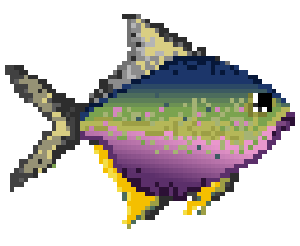

The body of a typical fish is adapted for efficient swimming by alternately contracting paired sets of muscles on either side of the backbone. These contractions form S-shaped curves that move down the body. As each curve reaches the tail fin, force is applied to the water, moving the fish forward. The other fins act as control surfaces like an aircraft's flaps, enabling the fish to steer in any direction.[49] Anatomy of a typical fish (lanternfish shown):1) gill cover 2) lateral line 3) dorsal fin 4) fat fin) caudal peduncle 6) caudal fin 7) anal fin 8) photophores 9) pelvic fins 10) pectoral fins Anatomy of a typical fish (lanternfish shown): 1) gill cover 2) lateral line 3) dorsal fin 4) fat fin 5) caudal peduncle 6) caudal fin 7) anal fin 8) photophores 9) pelvic fins 10) pectoral fins Since body tissue is denser than water, fish must compensate for the difference or they will sink. Many bony fish have an internal organ called a swim bladder that allows them to adjust their buoyancy by increasing or decreasing the amount of gas it contains.[50] The scales of fish provide protection from predators at the cost of adding stiffness and weight.[51] Fish scales are often highly reflective; this silvering provides camouflage in the open ocean. Because the water all around is the same colour, reflecting an image of the water offers near-invisibility.[52]